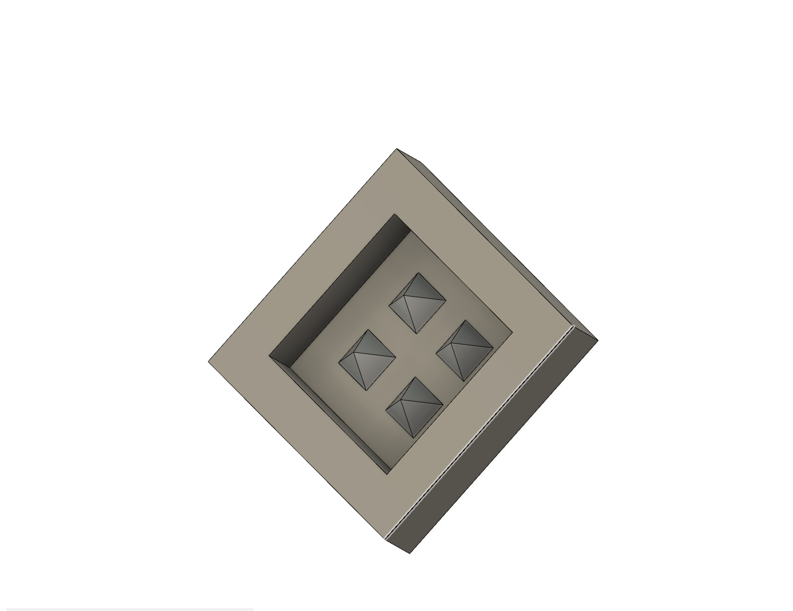
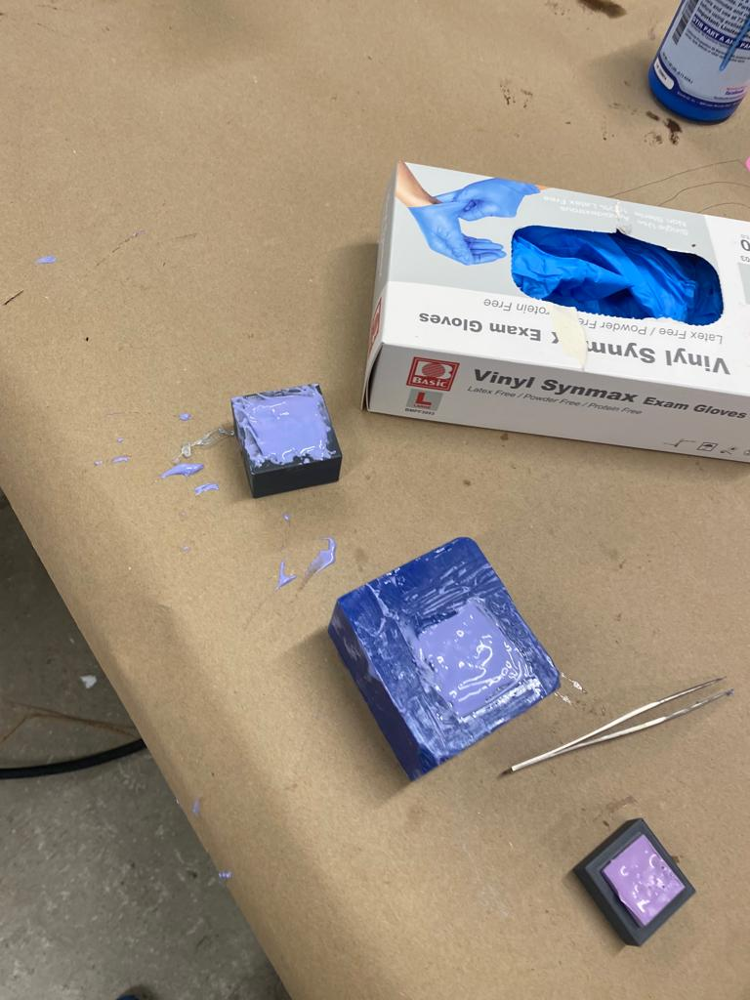
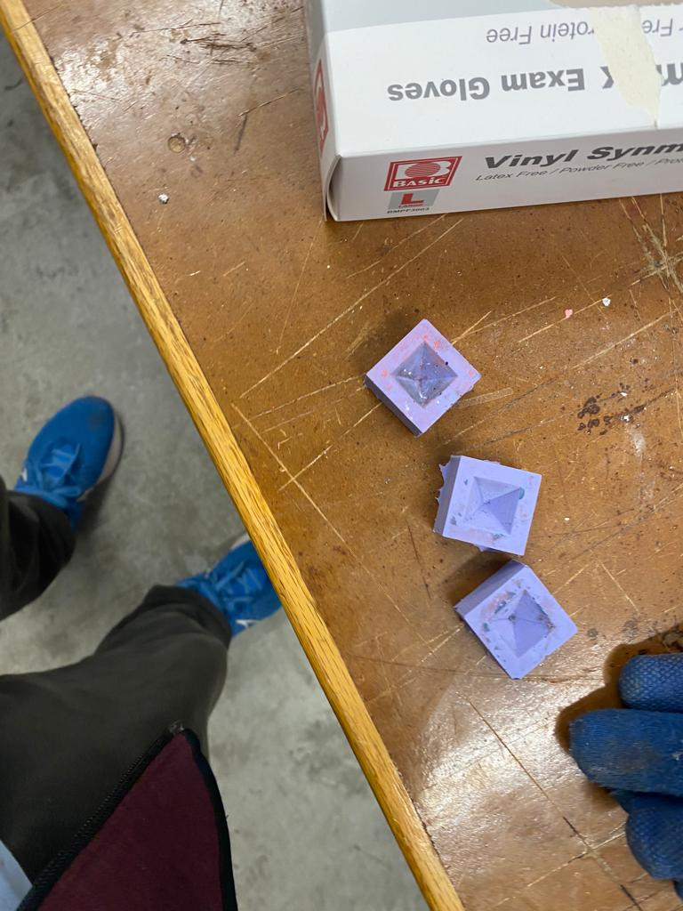
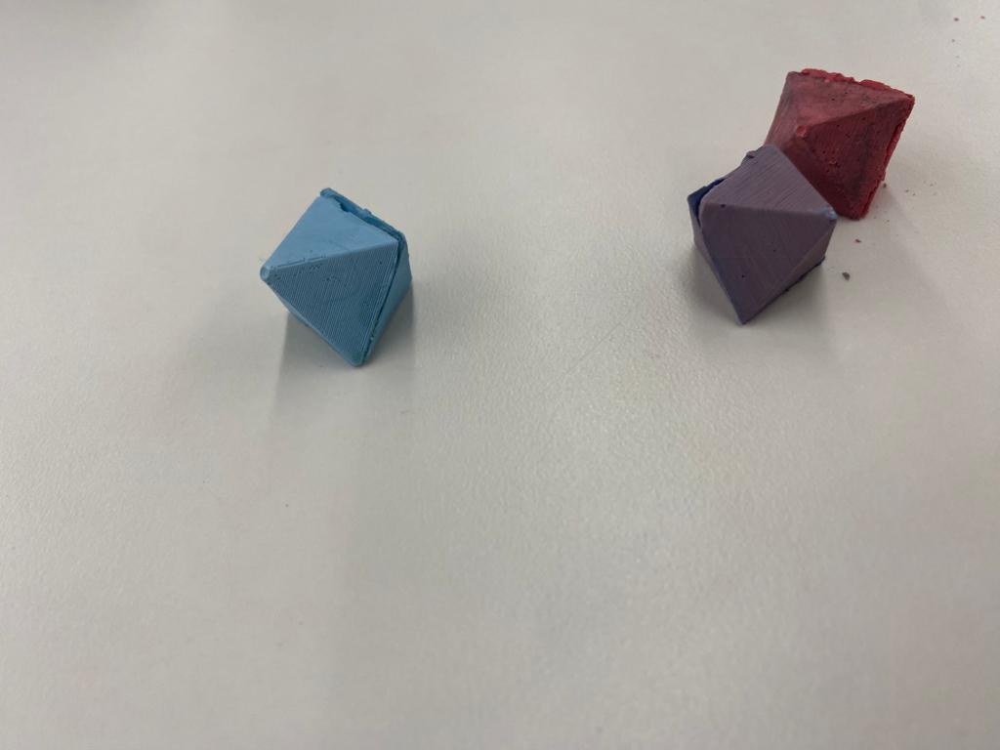
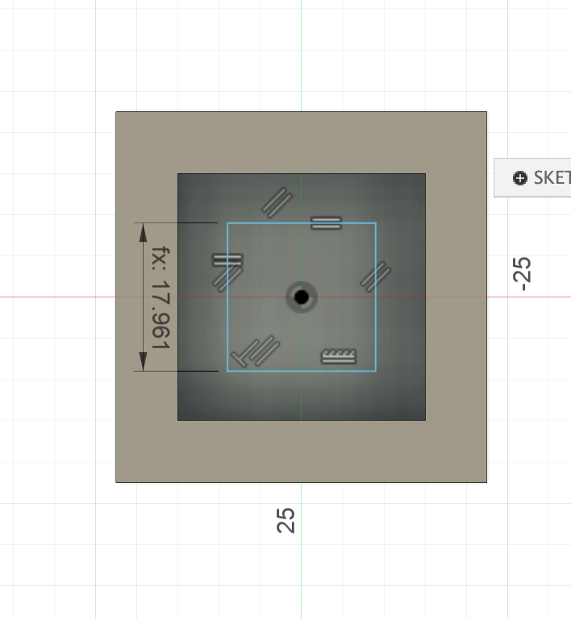

Burak's Love for Octahedron's
Casting Plaster
Cad-ing the cast's
This week I decided not to CNC my piece for my hoop project because I thought I'll able to 2.5D CNC'ing on metals. Instead I wanted to make a dice for my
dungeons and dragons club at my high school(the club has the dice but I just wanted to replicate one). Due to nature of dice's I had to cas the same thing twice
and stick them together and because of this any dice without a flat place to cut on-like 12-sided and 20-sided dice. I also wanted to not make a 4-sided dice nor a cube
and decided on making a octahedron. My idea was to just cast the half of the dice twice and glue them together. I though about making a mold that will give 4 halves of a
octahedron and on each of my cast I can make 2 full octahedron. I though the maximum depth the 2.5CNC machine in the lab would go is 1inch and made a design
that what to %75 of that design(75%). There was a lot of waiting there so I 3-d printed my mold while I waited my for my turn for the CNC to come. I then realized the maximum
depth I had was 1cm and rescaled my mold accordingly. While cnc'in the mold took of from the surface so I had to do it for a 2nd with adding more tape.
After I cnc-ed my mold I mixed the 2 ingrediendt to make the rubber mold(the one that it's pinkish) and casted the viscous liquid into my mold for both
CNC-ed(the one designed for a depth of 1cm) and my 3-d printed mold(designed for 1 inch depth screw, the height of the pyramid is 0.5inches)

This is the cad photo of the mold I CNC-ed, the triangle sizes for too small I just made 1 cast with this and not used it that much

Here's the original mold designed for 1-inch. The pyramid is here 0.5inches thick. The size of this octahedron was ideal so
I printed to o these molds and used them
MPU6050
Here's a photo of me making the molds.

To be honest honest while making the molds I tried to be gently but didn't do something special for eliinating bubles. I just put the stick in on places
where I felt there bubles. Altough I was a little careless. I tried to cleana way the excess rubber on the 3dprint. I also added some easy remove spray.
I don't know how but my 3-dprint mold came with only minor holes in, which made it perfect for making casting. Here's a photo of the mold from the 3-d print.
I have no photo's of the smaller mold because the triangle sizes were small so I didn't care about it after I made and focused more on casting with the mold from the
3-dprinted one.
Also I wanted to make multiple octahedrons so I need more than 1 mold so I printed another 3-dprint and created 2 molds from my existing 3-D prints.
I casted them and in total I casted 6 times in which I made 3 octahedrons. Here're the photo of the molds and octahedrons(I used glue to sick 2 sides of pyram.ds)

I used the one on the left the most as I just took the other 2 off

I mixed acrylic with plaster to make these. One is blue the other red and the last one is blue-red mixture.
Having fun with Casting Plaster and Metal
Molding and CNC-ing
Cad-ing the cast's
For my Cast I was trying to make a somooth surface for the pyramid and looking for a material that would be durable for rolling over a table. I asked Nathan
and he suggested me use plaster. I had to mix 32g for every 100g of plaster which is rpougly 1g H2O/3g Plaster ratio. On my first cast I sed 32/100 but on the others
I siply used 1/3. I weighed the cup by the palance and pured 32g water. To be accurate I had water on another cup and slowly poured it in the mixing cup, sometimes stoppinjg
to see how many grams where there. I used a similar straategy to add plaster as well. On the manuals I think it says at least half of the plaster mix, the put other hald. I
had plaster on another cup and slowly put in to the mixing cup witht he help of a rod. When it was around 1/2 of the toal grams I mixed then then poured till I had the neccesary
amount of plaster in. To color my cast's I used acrylic in the lab to color it. For my first 2 cast's I used blue, then red, then mixed red and blue to get a purplish-color.
I put the acyrlic always after I mixed the plaster and the water. Here's a photo of me puring water in to the cup.
After coloring the mixture, I gently poured the mixture into my molds making sure to eliminate molds. The mixture was liquid so I had no major holes.
On one of my molds I put acyrlic while casting to see how it effect and my acrylic made a cavatity. After poured the mixture in, I used the little rod
to sweep away the extra liquid sticking to the mold and tried to make a smooth surface. After that I just left my mold and came like 45 minutes later to get my cast.
I knew it was time to get my cast, when the mixture in the cup has fully solidified.
Altough plaster was good to use it was too brittle and I was not confident in it to use as a die, so I tried metal casting.
I though the rubber-molds wouldn't support metal but they did. I heated to oven and melted the metal there. I used gloves but the pan
was still too hot to touch with the gloves(I could only hold it for 10-20seconds before I had to put it down on the table). On my first attempt
the metal stayed liquid for like 1 minute which gave me enough time to put the pan on the table then pur onto my cast and I was happy with the result I got.
After that I tried to melt metal for 2 or 3 times but on each of them metal solidifed before I could pour them into the mold so I gave up on my idea.
Also the top surface of the metal is not flat at all and it would've been an challenge to attach 2 pyramids together. I had the problem of not-flat surface
with plaster as well, and though about puting a flat surface on top of the mold so that the cast came as flat. I never tried this but this still would've been a
challenge for metals as the metal is pretty hot and the surface I will put has to withstand that. Here's a photo of my metal cast.
Design of the Mold and Wasting an Hour Cading
Molding and CNC-ing
Casting Plaster
Cad-ing the pyramid should've been as easy as making a square and extruding it by angle. However because I didn't know that fusion was giving the angle beetween the verticaş
axes and the line as the angle, I though the' horizontal line, I spent like an hour trying to figure thigns out and learned 3-d sketches exist in fusion(altough I didn't use them)
only to realize my mistake with angles. Here's a photo explaining my problem
Besides the problem I had with complementary angles everythig else was easy. I designed my pieces so tha tht eheigh of the pyramid was the half of the depth
I though CNC machine could do, I made a %75 of that depth's indent in the mold and the side length of the pyramid were √2 times that of the heigh because of the geometry of
octahedron.
For my big octahedron and my wax block with 4 traingles the mold had a 4.5cm length and 3cm inner length. Here're some photos from the cad design.

Here's a photo of the indent inside the square is where the pyramid is

here's the photo of the 4 pyramids, all of them square with the same size. I didn't specify a distance from the edge

Here's the sketch for the single pyramid
For calculating the angle first I first found the heigh of the triangles then found the heigh of the pyramid then did inverse trig to found the angle. Because
how fusion360 deals with angled Extrude's I did -(90-angle) to get the shape I wanted. Here's a photo of how I found roughly 54.7° angle.
{kind=link}